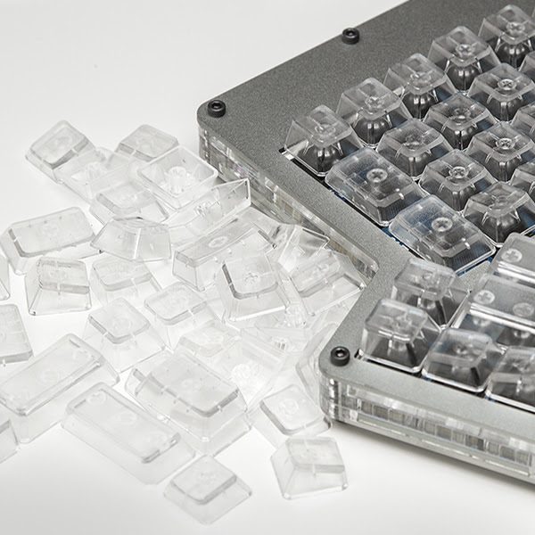

ErgoDox keyboard
keyboard
Now that I have a new blog setup, I can more quickly post what has been since long time in the making: my ErgoDox keyboard.
It all started with me reading Steve Yegge’s blog on touch typing and being convinced I should give it a try with a proper keyboard.
So on 2014-03-24 I joined a Massdrop purchase for an DIY ErgoDox split keyboard. It completed a week later and delivery was done somewhat end of May.
The kit contained:
2 x PCB
10 x Acrylic case Plates
1 x Teensy USB Board, Version 2
1 x MCP23018 I/O expander
2 x 3.5mm TRRS connector
1 x USB mini B plug
1 x 0.1uF ceramic capacitor
76 x 1N4148W-7-F diode (surface-mount)
1 x 2.2k ohm resistor
3 x 3mm T1 LED
2 x 220 ohm resistor
76 x Cherry MX switch
2 x USB cable Male A to male mini B
1 x TRRS cable
14 x Case screws/nuts
On 2014-05-30 I also joined a keycaps drop and ordered the day later:
Clear Ergodox DCS Keycaps (76 keys)

Finally on 2014-08-20 I joined a Grifiti ErgoDox Wrist Rest drop.
I followed the instructions at Massdrop (now in the archive, see these too to have an idea)
Initially progress has been very slow at the beginning on my side. I had to dig out of some boxes my old soldering iron…
I started with the USB connector.
It has been immediately evident that soldering SMD diodes is a pain in the neck: they are so tiny (3 mm long, 1.5 mm wide) and my tools/eyes not really up to the task.
So I went to the VUB University Fablab: on Wednesdays it is open to the public. I did some ten/twenty SMD diodes.
Then I continued with my little iron but soon after it failed miserably of old age. So I could not solder any more. My Eurocontrol collegue “Tasso” to the rescue: he provided with a new iron and then work could continue.
But kids’ summer holidays were now over so no more time for me to tinker! It’ll all have to wait 2015.
Now in July 2015 all started again, the pain continued thanks to those little tiny SMD diodes and them being 76! Pain, pain, pain.
I did a small test completing first a column on the left side and a few keys on the right half, loaded the firmaware: it all worked. So now just a matter of finishing up. But again time was up…completion had to wait for next summer holidays.
Summer 2016 was great: I finished everything up and was ready to try it.
Buuuum! Some keys were not working.
Soon I noticed that it was a full column and then I inspected my soldering and found that on one of the keys it was really a mess. A quick fix made it all work correctly!!!!
SUCCESS
I decided to keep a QWERTY layout, but I have not yet really execised for touch typing. That seems to need so much commitment!